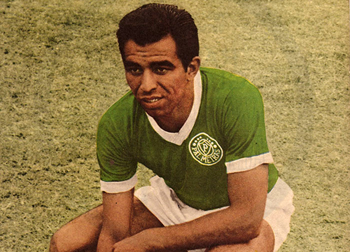
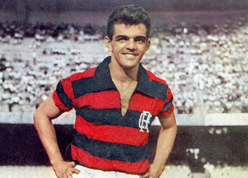

O Futevôlei é uma modalidade esportiva praticada em quadra de voleibol de areia.
Caracteriza-se por ser um esporte coletivo, de extrema habilidade e concentração dos seus praticantes. É jogado por duas equipes formadas por dois ou quarto jogadores.
O jogo é disputado em uma quadra de areia, medindo 18x9 metros, dividida por uma rede suspensa. Os jogadores têm por objetivo enviar a bola por cima da rede usando toques que podem ser efetuados com os pés, coxas, peito, cabeça e ombros.
História do Futevôlei
A criação do futevôlei começou com a tentativa de burlar uma lei que existia nas praias cariocas.
Nos anos 60, a prática do futebol foi proibida nas praias do Rio de Janeiro, sendo assim todos os esportes que não utilizassem rede e um espaço seguramente delimitado, não poderia ser praticado no local.
Os Amantes da praça de futebol de areia, levou a imaginação e eles começaram a jogar futebol em quadra do voleibol de praia, esporte permitido.
Aos poucos, essa parte essa prática ganhou adaptações, incluindo os jogadores de peso do futebol de campo brasileiro da época, dida e Vavá.
Quem começou a lapidar a nova modalidade foi Tatá, Ralph, Luiz Fernando "tananan", Airton, Adilton Brandão, Orlando "Pingo de ouro", Feitosa, Francês, Carlson Gracie, Zé e Chico Brandão, Betão e ricardinho


Regras
Atualmente, essa modalidade é uma prática desportiva com estrutura com regras Claras como vemos a seguir:
A dimensão da quadra é de 18 x 9 metros, cortada por uma rede exatamente ao meio. Além disso, deve haver uma área livre de no mínimo 3 metros além das linhas de demarcação e 8 metros acima do solo. Em competições oficiais, as delimitações da zona livre são ainda mais amplas: cinco metros além da linha lateral, oito metros além da linha de fundo e doze metros acima do solo
O piso da quadra deverá ser sempre de areia, preferencialmente bastante nivelada e sempre livre de objetos cortantes que podem machucar os atletas. Oficialmente, a areia do piso deve ser do tipo fina
A rede mede 9,5 metros de comprimento por 1 metro de largura, feita por malha quadriculada de 10x10 centímetros. Deve ser colocada a uma altura de 2,20 metros. Uma curiosidade é que se permitem propagandas afixadas na rede durante as partidas
A bola utilizada tem a circunferência entre 68 e 70 centímetros e deve ser cheia com pressão entre 0,56/0,63 kg/cm. E é importante que, em um mesmo jogo, todas as bolas utilizadas apresentem exatamente as mesmas características
As partidas de futevôlei podem ser disputadas em duplas (dois jogadores em cada lado da quadra) ou em times de cinco pessoas (do qual um deles é reserva)
Os uniformes oficiais incluem camiseta ou camisa de malha e short ou calção, que podem ou não ser numerados – 1 e 2, para dupla, e de 1 a 5, para o grupo
O jogo é iniciado após o primeiro saque, que se dá em função do apito do árbitro. O saque deve ser executado por meio do toque com os pés e deve atravessar a rede por cima, chegando à área da quadra adversária. O local para o saque é chamado “zona de saque” e abrange desde a linha demarcatória de fundo até o limite da zona livre
As linhas de demarcação são consideradas área de jogo. Portanto, caso a jogada adversária faça com que a bola caia sobre a linha demarcatória, o ponto é válido para o adversário
Assim como no voleibol, a bola deve ser tocada entre uma e três vezes antes da devolução à equipe adversária. O toque pode ser realizado com qualquer parte do corpo, com exceção dos braços, antebraços e mãos
Geralmente, as partidas são compostas por três sets, com 15 pontos cada.